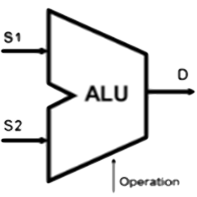

The ALU (Arithmetic and Logical Unit) is the central part of the processor. It takes two binary numbers as inputs, called S1 and S2, and produces an output D by applying one of its arithmetic or logical operations.

Arithmetic operations include adding two numbers, incrementing and decrementing a value. Logical operations include one's complement, logical and, inclusive and exclusive or, and left rotation.